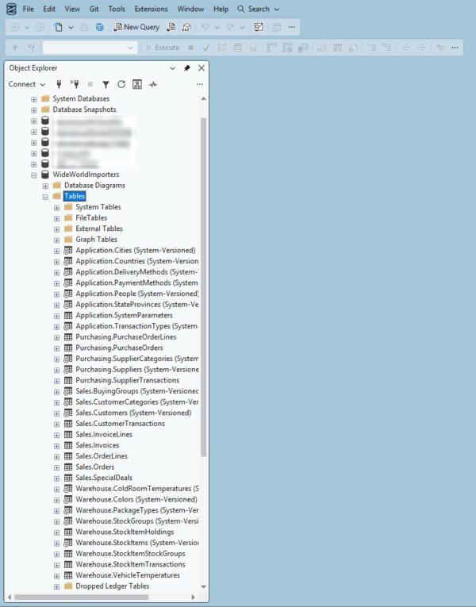
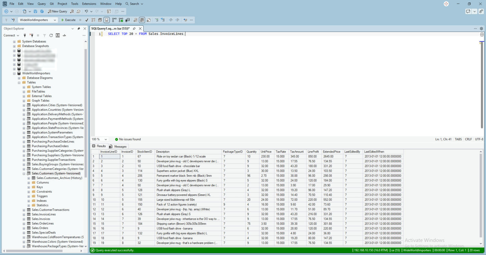
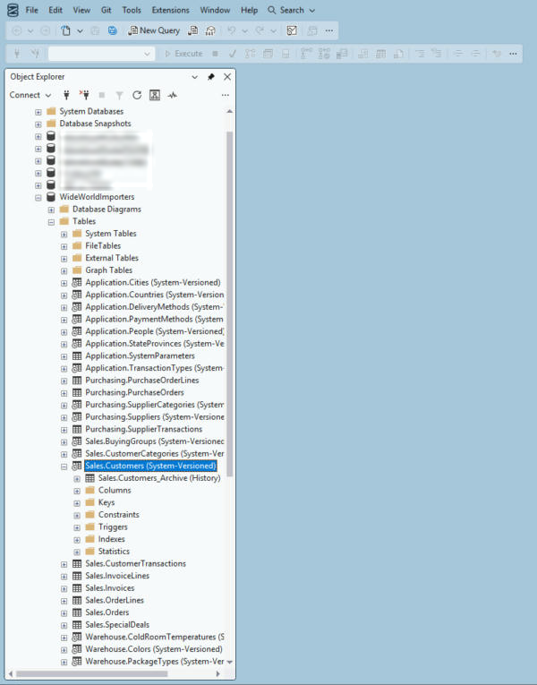
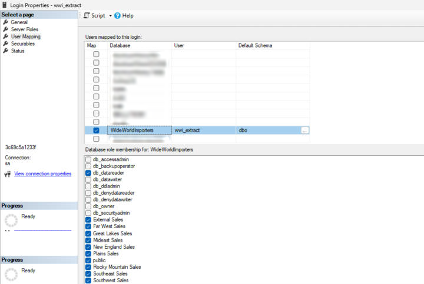

Chapter 3 · Foundations
The Source System
WideWorldImporters is the operational database of a fictional wholesale company: it takes orders from shops, invoices them, buys stock from suppliers and moves it through a warehouse. Before loading anything, we need to know four things about it: which tables matter, how to spot a changed row, how to read it without disturbing it, and what might stop us seeing all of it.

Four schemas, 31 tables
| Schema | Tables | Largest tables (rows) | What it holds |
|---|---|---|---|
| Sales | 9 | OrderLines 231,412 · InvoiceLines 228,265 · CustomerTransactions 97,147 | Customers, orders, invoices and customer payments |
| Warehouse | 9 | StockItemTransactions 236,667 · VehicleTemperatures 65,998 | Products, stock levels and every stock movement |
| Purchasing | 5 | PurchaseOrderLines 8,367 · SupplierTransactions 2,438 | Suppliers and purchase orders |
| Application | 8 | Cities 37,940 · People 1,111 | Shared reference data: people, cities, states, countries, methods |
Altogether the 31 tables hold 1,057,452 rows. The business heart is in Sales: an order is placed, its lines are picked, and an invoice with invoice lines is raised when the goods ship.

How to spot a changed row
Loading every table in full every night would work, but it wastes time and money as the data grows. Instead, each table needs a change column: a timestamp that moves whenever a row is inserted or updated. WideWorldImporters has one on every table, in one of three forms:
| Change column | Tables | Why it works |
|---|---|---|
LastEditedWhen | Transaction tables such as Orders, InvoiceLines, StockItemTransactions | The application sets it on every insert and update |
ValidFrom | The 17 system-versioned (temporal) tables such as Customers, StockItems, Cities | SQL Server sets it automatically to the time the current version began |
RecordedWhen | VehicleTemperatures | A sensor reading is written once, when it is recorded |
The temporal tables also keep every old version in a history table, for example Sales.Customers_Archive. We don't load those: from the first load on, dbt snapshots record history themselves (Chapter 7).

A read-only login for the extract
The extract never uses sa. It gets a login of its own that can only read this one database:
CREATE LOGIN wwi_extract WITH PASSWORD = '<a long random password>', CHECK_POLICY = ON,
DEFAULT_DATABASE = WideWorldImporters;
USE WideWorldImporters;
CREATE USER wwi_extract FOR LOGIN wwi_extract;
ALTER ROLE db_datareader ADD MEMBER wwi_extract;The password is generated on the VM and stored only in ~/wwi_snowflake/secrets/wwi.env (chmod 600), which the extract script reads.
The surprise: 0 customers
The first full load copied 30 tables perfectly. Sales.Customers, which has 663 rows, came back with 0. No error, no warning: the table simply looked empty to the extract login.
The reason is row-level security. WideWorldImporters ships with a security policy that filters Sales.Customers by sales territory:
-- FilterCustomersBySalesTerritoryRole on Sales.Customers (FILTER and BLOCK predicates)
CREATE FUNCTION Application.DetermineCustomerAccess(@CityID int)
RETURNS TABLE WITH SCHEMABINDING AS
RETURN (SELECT 1 AS AccessResult
WHERE IS_ROLEMEMBER(N'db_owner') <> 0
OR IS_ROLEMEMBER((SELECT sp.SalesTerritory + N' Sales' ...)) <> 0
...);A reader sees a customer only if it is db_owner or a member of the role for that customer's territory, such as Far West Sales. Making the extract login db_owner would fix it and break the read-only rule. The right fix is to add it to the nine territory roles, which grant visibility and nothing else:
ALTER ROLE [External Sales] ADD MEMBER wwi_extract;
ALTER ROLE [Far West Sales] ADD MEMBER wwi_extract;
ALTER ROLE [Great Lakes Sales] ADD MEMBER wwi_extract;
ALTER ROLE [Mideast Sales] ADD MEMBER wwi_extract;
ALTER ROLE [New England Sales] ADD MEMBER wwi_extract;
ALTER ROLE [Plains Sales] ADD MEMBER wwi_extract;
ALTER ROLE [Rocky Mountain Sales] ADD MEMBER wwi_extract;
ALTER ROLE [Southeast Sales] ADD MEMBER wwi_extract;
ALTER ROLE [Southwest Sales] ADD MEMBER wwi_extract;
-- SELECT COUNT(*) FROM Sales.Customers → 663 for wwi_extractAlways reconcile the first load
Row-level security, filtered views and permissions all fail silently: the query succeeds and returns fewer rows. Compare row counts with the source after the first load of any new system. This is exactly what the reconciliation in Chapter 11 automates.

Key takeaways
- Every table has a change column: LastEditedWhen, ValidFrom or RecordedWhen.
- The extract uses its own read-only login, never
sa. - Row-level security hid all 663 customers; territory-role membership fixed it without breaking read-only.
- Silent row loss is why the first load, and every load after it, is reconciled.